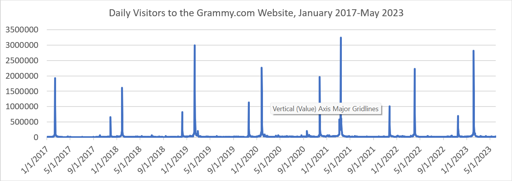
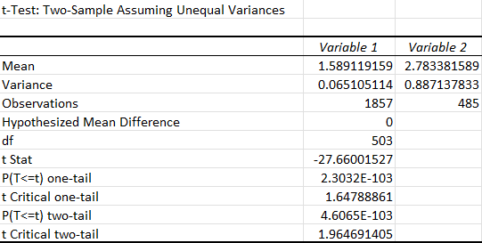

Measure Traffic Patterns
Evaluate daily website traffic and distinguish normal visitor activity from Grammy Award event-day spikes.
Business Intelligence • Web Analytics
An Excel-based analysis of website traffic, audience engagement, mobile behavior, competitor performance, and statistical evidence following the February 2022 separation of grammy.com and therecordingacademy.com
In February 2022, the original grammy.com website was divided into two separate digital properties. The continuing grammy.com site focused on the Grammy Awards and related music content, while therecordingacademy.com became the primary site for information about the Recording Academy as an organization.
The purpose of this project was to evaluate whether the split improved website performance enough to justify maintaining two separate sites. Using Excel, I compared website traffic and engagement before and after the split, evaluated mobile usage, benchmarked performance against the American Music Awards website, and performed an A/B test on pages per session.
Based on the overall improvement in session depth and bounce rate, I recommended that the two websites remain separate while teh team continued to improve content discovery, visit duration, and the mobile experience.
Separating one established website into two distinct digital properties can clarify each site's purpose, but it can also divide traffic, complicate navigation, and weaken engagement if visitors do not understand where to find relevant content.
The analysis was designed to answer the following decision question:
Did the February 2022 website split improve digital engagement enough to justify keeping grammy.com and therecordingacademy.com separate?
Evaluate daily website traffic and distinguish normal visitor activity from Grammy Award event-day spikes.
Compare pages per session, bounce rate, and average time on site before and after the split.
Determine how much of the grammy.com audience visisted from mobile devices.
Compare Grammy website metrics with the American Music Awards website to identify strengths and improvement opportunities.
Determine whether the post-split change in pages per session was statistically significant.
Use the combined evidence to recommend whether the organization should keep the websites separate or merge them again.
The project used two datasets containing daily website performance data.
This dataset included website activity for the original combined grammy.com site before February 2022 and activity for the continuing grammy.com site after the split.
This dataset contained performance data for therecordingacademy.com after the website split.
The available fields supported the calculation and comparison of several website-performance measures, including:
The pre-split grammy.com data represented the performance of the original contained website. The post-split period contained separate measures for the new grammy.com and therecordingacademy.com sites.
I used Excel to clean, aggregate, compare, and visualize the website data. The workflow combined descriptive analysis with competitor benchmarking and hypothesis testing.
Create a line chart showing daily grammy.com visitors and use a PivotTable to compare Grammy Award dates with normal days.
Use Excel functions, including SUM and SUMIF, to calculate pages per session, bounce rate, and average time on site.
Calculate mobile visitors as a percentage of total grammy.com visitors.
Compare Grammy website performance with the American Music Awards website using shared engagement metrics.
Use Excel's Data Analysis Toolpak to test whether the difference in pages per session between the combined and post-split grammy.com websites was statistically significant.
Evaluate the combined evidence and recommend whether the two websites should remain separate.
The daily visitor chart showed that grammy.com traffic was strongly influenced by the Grammy Awards. Large visitor spikes appeared around ceremony dates, making it important to separate event-driven traffic from normal website activity.

Grammy Award Day Visitors
1,389,590
Normal Day Visitors
32,388
The difference confirmed that the ceremony was the primary driver of the site's largest traffic spikes. Event dates therefore needed to be considered separately when evaluating typical website performance.
Three KPIs were used to evaluate how visitor behavior changed after the original website was divided:
The average number of pages viewed during a website session.
The percentage of sessions in which a visitor left without viewing an additional page.
The amount of time (in seconds) a visitor spent on the website during a session.
| Website | Pages per Session | Bounce Rate | Average Time on Site |
|---|---|---|---|
| Original combined grammy.com | 1.86 | 41.6% | 102 seconds |
| Post-split grammy.com | 2.25 | 40.2% | 83 seconds |
| therecordingacademy.com | 2.78 | 33.7% | 129 seconds |
The original combined website averaged 1.86 pages per session. Following the split, grammy.com increased to 2.25, while therecordingacademy.com averaged 2.78.
Both post-split websites therefore generated greater session depth than the combined site, suggesting that visitors explored more content after the websites were separated.
The combined website had a bounce rate of 41.6%. AFter the split, the rate declined to 40.2% on grammy.com and 33.7% on therecordingacademy.com.
The lower rates indicated that visitors were less likely to leave after viewing only one page, with the strongest improvement appearing on therecordingacademy.com.
Visitors spent an average of 102 seconds on the original combined website. After the split, average time decreased to 83 seconds on grammy.com but increased to 129 seconds on therecordingacademy.com.
The result was mixed rather than uniformly positive. The Recording Academy site generated deeper and longer sessions, while grammy.com generated more page views per visit but shorter overall sessions.
74%
of grammy.com visitors used mobile devices
Nearly three-quarters of grammy.com visitors accessed the website from mobile devices. This made the mobile experience a central business consideration rather than a secondary design concern.
Improving page speed, navigation, readability, content hierarchy, and mobile responsiveness could therefore affect the majority of the site's audience.
I compared grammy.com with the American Music Awards website (theAMAs.com) to identify areas of relative strength and opportunities for improvement.
Relative Strength
Grammy.com performed better than theAMAs.com on bounce rate, suggesting that the Grammy visitors were less likely to leave after viewing only a single page.
Improvement Opportunity
Grammy.com trailed the competitor in pages per visit, indicating an opportunity to improve navigation and encourage additional content discovery.
Improvement Opportunity
Visitors spent less time on grammy.com than on the the competitor's site, suggesting that the content experience could be strengthened to retain visitors for longer periods.
Audience Difference
Grammy.com had a lower percentage of mobile visitors than theAMAs.com. This difference may reflect audience or content strategy and warranted further investigation.
I recommended a deeper review of the competitor's navigation, content structure, and mobile experience to identify practices that might improve content discovery and visit duration on grammy.com,
I used Excel's Data Analysis Toolpak to evaluate whether the difference in pages per session between the original combined website and the post-split grammy.com site was statistically significant.
There was no statistically meaningful difference in pages per session between the combined website and the post-split grammy.com website.
There was a statistically meaningful difference in pages per session between the combined website and the post-split grammy.com website.
Statistical Result
The analysis found that the difference between the original website's 1.86 pages per session and the post-split grammy.com site's 2.25 pages per session was statistically significant at the 95% confidence level.
This result provided evidence that the increase in session depth was unlikely to be explained only by normal variation in the observed data.

Both post-split websites generated more pages per session than the original combined website.
Visitors were less likely to leave after one page on both post-split websites, with the strongest improvement occurring on therecordingacademy.com.
Grammy.com generated greater session depth but shorter visits, while therecordingacademy.com recorded both deeper and longer sessions.
With approximately 74% of visitors using mobile devices, improvements to the mobile experience could affect most of the grammy.com audience.
Event-day visitor totals were dramatically higher than normal-day traffic, making ceremony timing an important factor in website analysis.
The increase in grammy.com's pages per session was statistically significant at the 95% confidence level.
The strongest post-split results appeared on therecordingacademy.com, which recorded the highest pages per session, the lowest bounce rate, and the longest average time on site. The new grammy.com also improved in pages per session and bounce rate, and the A/B test provided statistical evidence that its increase in session depth was meaningful.
Although average time on grammy.com declined, the overal engagement evidence supported maintaining the split rather than recombining the sites.
I also recommended that the team perform a deeper analysis of theAMAs.com. Grammy.com outperformed the competitor on bounce rate but trailed it in pages per visit and visit duration. Studying the competitor's navigation, content structure, and mobile presentation could reveal opportunities for further improvement.
This project reinforced the importance of connecting web analytics to a specific organizational decision. Rather than reporting traffic and engagement metrics in isolation, I evaluated how each KPI contributed to the question of whether the Recording Academy should maintain the separate websites.
The project also demonstrated why no single KPI should determine a strategic recommendation. Pages per session and bounce rate improved after the split, but average time on site moved in different directions across the two websites. Evaluating those results together produced a more balanced interpretation of how visitor behavior changed.
Using PivotTables, Excel formulas, competitor benchmarking, and statistical testing strengthened my ability to move from raw website activity to a clear business recommendation. The analysis also highlighted the need to separate event-driven traffic from ordinary behavior and consider how device usage affects digital strategy.
A future version of this project could incorporate conversions, acquisition channels, content-level engagement, audience segments, user journeys, and device-specific behavior. Those additions would provide a clearer understanding of not only how long visitors stayed or how many pages they viewed, but whether each site helped users accomplish its intended purpose.